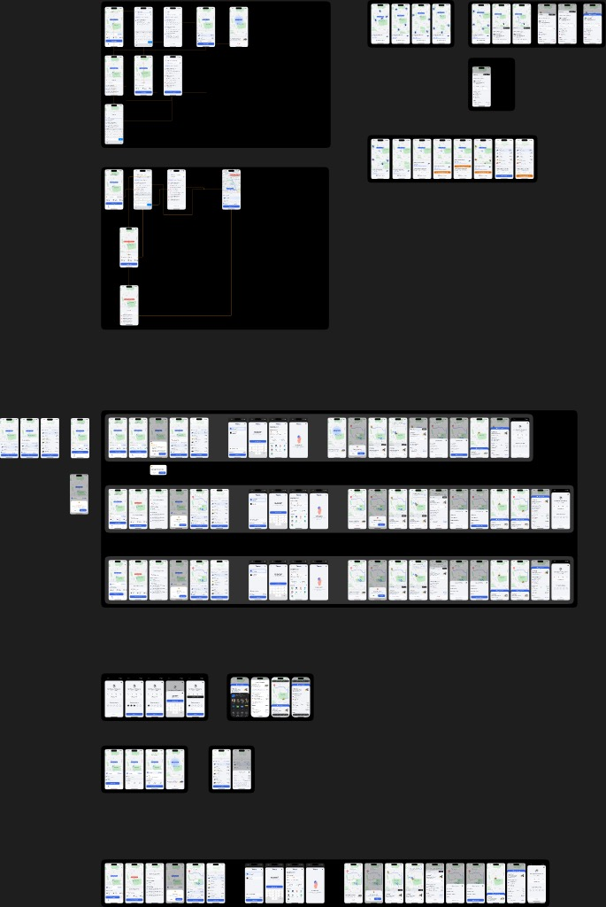
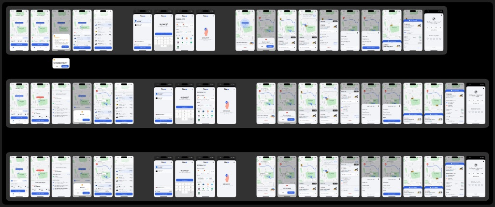
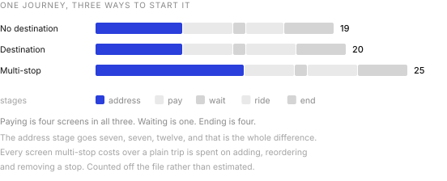
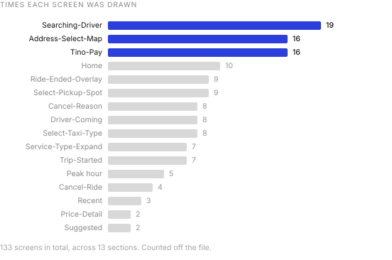
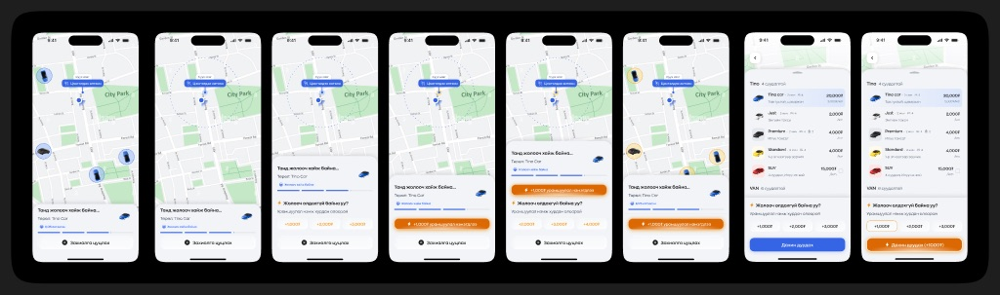
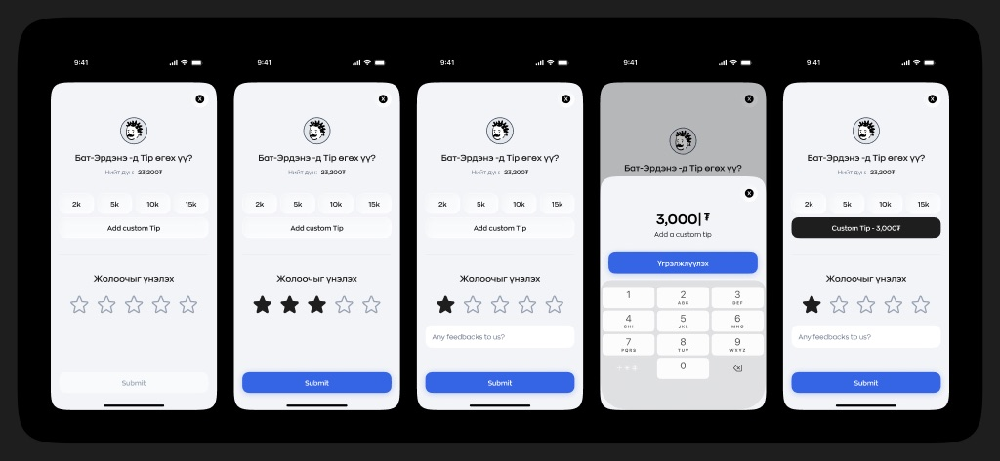

Core flow audit & update in Tino Go
2026
A ride looks like four taps. Open, pick a car, wait, pay. When I drew it out properly it was 133 screens, and most of them are the parts nobody demos.1
Everything on one canvas
The method was the whole point. Rather than auditing screen by screen in separate files, I put the entire flow onto one board, 12,885 by 19,275 points, with every branch drawn at the same scale as the happy path.

I have never found a broken flow by looking at screens. I find them by looking at the gaps between screens, and gaps only become visible when the thing is laid out flat and you can walk along it.
Three ways to start one journey
I drew the main flow as three parallel tracks. A trip with no destination, where you get in and tell the driver. A trip with a destination. And a multi-stop trip.

Stacking them is what made the audit work. Read down a column and you are comparing the same moment across three modes. That is where the inconsistencies fell out, and it is also where I saw how much of the work is shared.

Paying is four screens in all three. Waiting is one. Ending is four. The address stage goes seven, seven, twelve, and that is the entire difference between the three modes. Multi-stop costs a quarter more screens than a plain trip and spends all of it on adding, reordering and removing a stop.
Waiting is the product
When I counted how many times I had drawn each screen, it told me where the real design problem was.

The screen a passenger stares at hardest is the one where nothing is happening yet. It is drawn nineteen times on this board, and Home is drawn ten.
Here is the thing that ratio hides. In each of the three main tracks, waiting is exactly one screen. It reached nineteen only once I drew what can happen during it, which took four separate sections: looking, driver found, driver not found, and the flash call variant.
That was my finding. Booking a ride is a solved problem and the industry solved it years ago. Waiting for one is not solved, because waiting has three endings and two of them are bad. The driver arrives, no driver arrives, or you give up. All three needed designing, and only the first one ever gets a mockup.
When nobody comes
I gave the no-driver path its own section, eight screens of it, and built it as a ladder rather than an error.

I wanted the escalation to be honest about what is happening. It does not say “no drivers available” and leave you there. It tells you the market is tight and offers you the one lever that actually moves it, which is money, in fixed steps you can see before you commit.
I let colour carry it. The whole app is blue. The moment the flow starts asking for a bonus I turn it orange, and it stays orange through the tier list and into the re-call button. One hue doing the work of a paragraph.2
The ending, and what it asks for
Five states of the screen that closes every ride.

Two decisions I made deliberately. Rating is required and tipping is not, which is the right way round and the opposite of what a revenue target would ask for. And a low rating opens a free text field that a high rating does not. I ask for detail when something went wrong, not when it went fine.
One thing I flagged for the next round. The tip presets are 2k, 5k, 10k and 15k against a fare of 23,200₮ on this screen. That top preset is a 65 percent tip. Preset ladders anchor people, and a ladder that reaches that high is doing something other than making it easy to be generous.3
What an audit that size is for
Thirteen sections, 133 screens, one canvas. A fair question, and one I was asked, is whether any of that was worth it against fixing bugs as they came in.
My argument for it is that a flow this size has failure modes nobody reports. Nobody files a ticket saying the cancel reason list is inconsistent between a multi-stop trip and a plain one. They just cancel, and you read it as churn. Drawing all three modes side by side was the only way I could surface that kind of thing before a user found it.
The argument against, which I take seriously, is that a board this size is expensive to keep true, and a canvas that stops matching the build is worse than no canvas at all.4
What it bought us was a shared picture. Thirteen sections on one wall meant the conversation stopped being about single screens and started being about the shape of the whole journey, which is where the waiting problem was hiding. That is why I would do it once, properly, at the start of a cycle rather than never.
- The 133 is every phone sized frame on the board, counted from the file rather than estimated. Section counts, screen types and board dimensions come from the same place. These are design files, not production screenshots, and the fares and names on them are placeholder data.
- Orange is doing something slightly uncomfortable here. It reads as urgency, and urgency is exactly the state in which people agree to pay more. Worth being deliberate that it signals a changed price rather than manufacturing pressure.
- The presets may well be flat amounts chosen for round numbers rather than percentages of the fare. Even so, what a passenger sees is a ladder next to their total, and they read it as a proportion.
- Two sections on this board are both called Multi-Stop, one inside the main flow and one about eight thousand points further down. I could not tell from the file which is current. That is the maintenance problem in miniature.